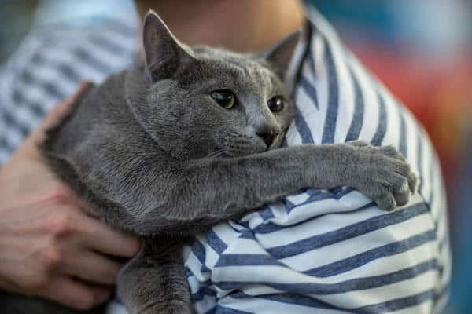
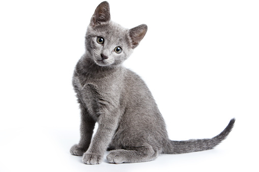

Sobre o azul russo
Conhecido também como “o tímido desconfiado”, o gato azul russo é, como o nome já indica, originário da Rússia, muito provavelmente da cidade portuária de Arkhangelsk e também da Escandinávia. Passou a ser levado para outras partes da Europa em 1860, tendo a Inglaterra como principal destino. Um gato afável e tímido, ele é muito sensível às emoções humanas e é muito bom em se entreter sozinho. Por ser um gato bastante tranquilo e independente, se dá bem com pessoas que moram sozinhas e idosos. Sua personalidade desconfiada e tímida faz com que não seja um bom companheiro para crianças, principalmente as que são mais agitadas, podendo se sentir intimidado e assustado.
Imagens


Voltar